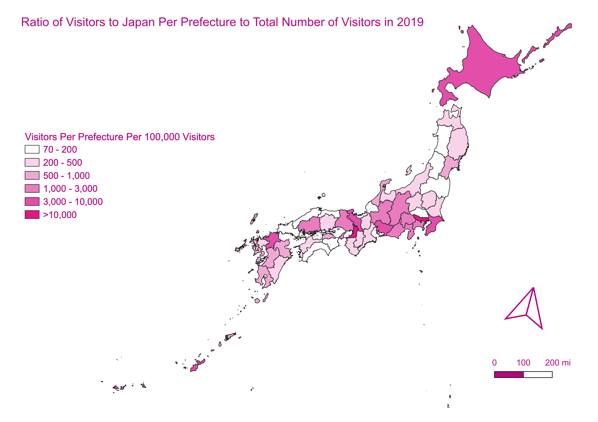

Homework 9: Choropleth
This map was created with a shapefile of Japan's prefectures from the UN Office for the Coordination of Humanitarian Affairs (OCHA) and data from the Japan National Tourism Organization (JNTO) on the number of tourists who visited each prefecture in 2019. This maps uses the the ratio of the number visitors to each Japanese prefecture to the total number of visitors to Japan in 2019.
Each ratio of visitors per prefecture to total visitors reflects the number of visitors to each prefecture per 100,000 visitors.

I chose to do a choropleth of Japan because it's an area of the world I'm intrested. Because I would like to visit there some day, it's interesting to see the areas of Japan that attract the most tourists.
Comparing this data to a map of transportation in Japan, a choropleth of number of hotels or lodgings per prefecture, and the types of attractions and sights in each prefecture that draw tourists could provide further insight into tourist behavior.
Data Used for This Project:
CSV Dataset Source
CSV Dataset
Link to Shapefile Source
Link to Shapefile